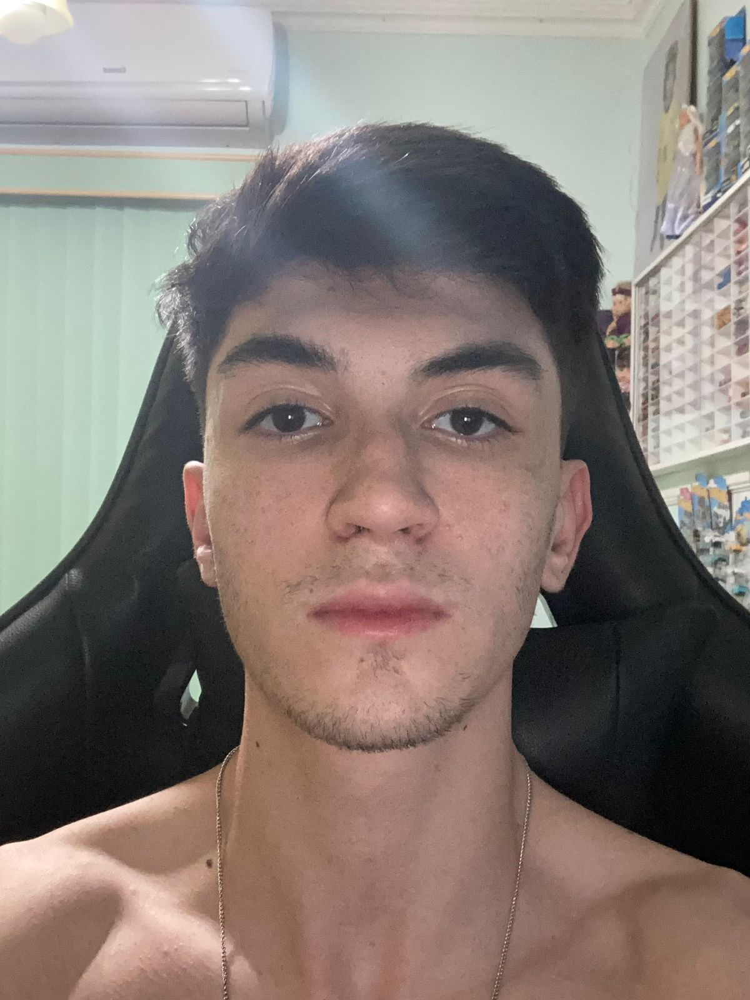

Brasileiro, solteiro. Nascido em 24 de abril de 2006.
Rua Francisco Loures Salinet, 1514 - Centro.
86200-000 - Ibiporã - PR.
Telefone: (43) 9 9821-6990 / (43) 3158-2336
E-mail: rafinhapersiguelo@gmail.com Busco contribuir para projetos futuros, desenvolver e aplicar conhecimentos, além de almejar oportunidades que me permitam crescimento profissional e impacto positivo no ambiente e na experiência em equipe.
Ensino Fundamental e Médio - Colégio Integrado Sônia Marcondes, conclusão 2023.
Superior - Centro Universitário Filadélfia Unifil - Cursando 1º período em Engenharia de Software (graduação prevista para dezembro de 2028).
Curso de Inglês - Wizard - Incompleto 2020.
Conhecimentos nas áreas de Arquitetura e Organização de Computadores, Desenvolvimento de Aplicativos Móveis, Gerenciamento de Projetos e Requisitos, Lógica de Programação, Matemática Discreta, Inteligência Emocional e Autoconhecimento, Resiliência Humana e Equilíbrio Mental, além de possuir boa comunicação e disposição a aprendizagem.
Português: Fluente.
Inglês: Intermediário/Avançado.
BEER CLUB - BAR E PETISCARIA 2023 - 2024:
Cargo: Garçom
Principais atividades: Organização de mesas, Atendimento aos clientes, Registro de pedidos,Servir os clientes.
Cargo: Atendente de Caixa.
Principais atividades: Atendimento aos clientes, Operação de caixa.